旁白
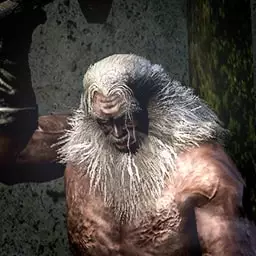
铁匠安德烈
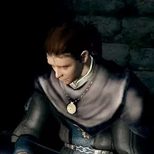
彼海姆的李凯尔特
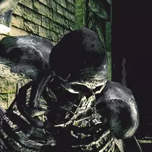
铁匠巴摩斯
彼海姆的古利古斯
大帽子罗根
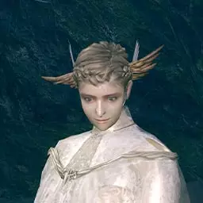
乌拉席露的幽暗
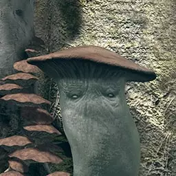
灵庙看守者伊丽莎白
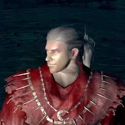
疗伤圣手英果德
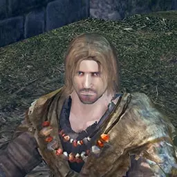
大沼咒术师劳伦迪斯
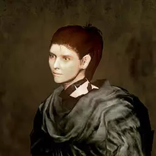
伊札里斯的克拉娜
背蛋者恩吉
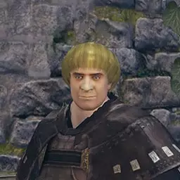
索尔隆德的佩特鲁斯
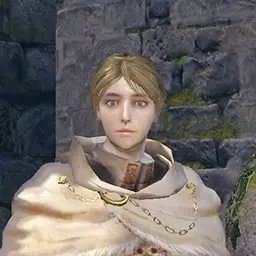
索尔隆德的圣女蕾亚
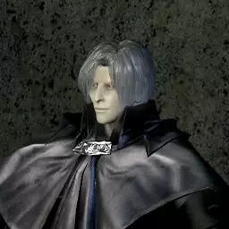
卡利姆的欧兹华德
东国的芝
可靠的帕奇
杰纳的德纳尔
伟哉切斯特
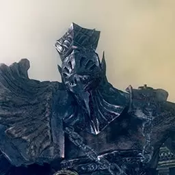
鹰眼戈夫
城外不死镇男商人
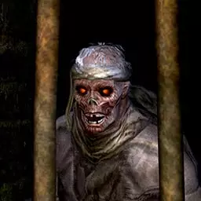
城外不死镇女商人
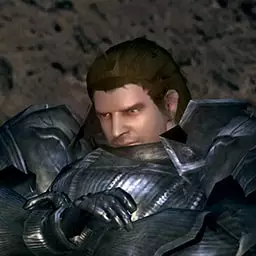
灰心的商人
巨人铁匠
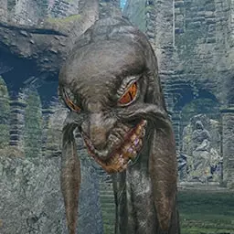
寻找王者的芙拉姆特
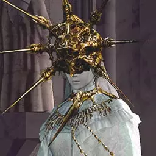
黯影太阳葛温德林
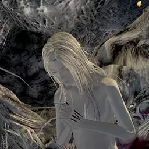
混沌的女儿
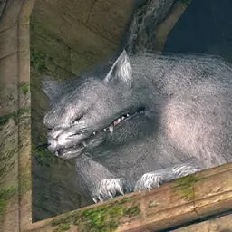
白猫雅薇娜
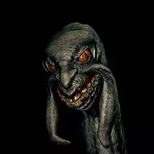
平抚黑暗的卡斯
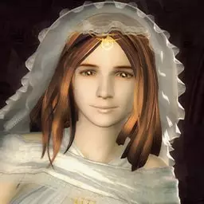
阳光公主葛维艾薇雅
亚斯特拉的奥斯卡
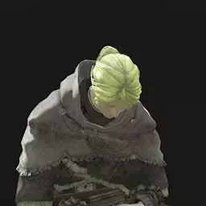
防火女安娜塔西亚
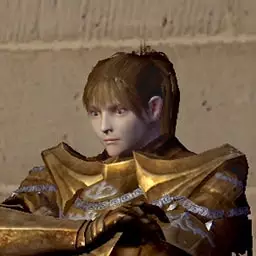
暗月女骑士
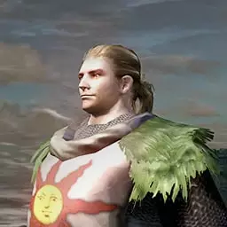
太阳战士索拉尔
卡塔利纳的杰克麦雅
卡塔利纳的吉克琳德
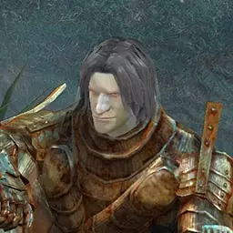
女神的骑士罗特雷克
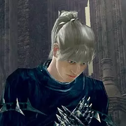
王的先锋基亚蓝
灰心的战士
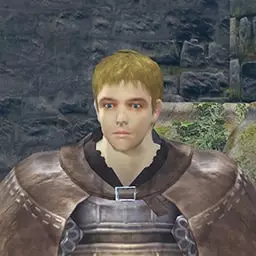
索尔隆德的文斯
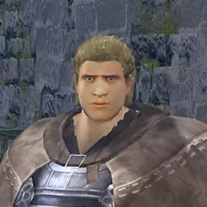
索尔隆德的尼可
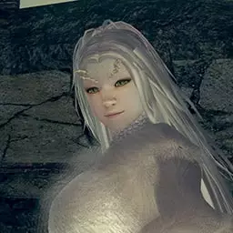
半龙普利希拉
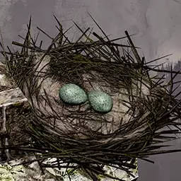
鹰女孩
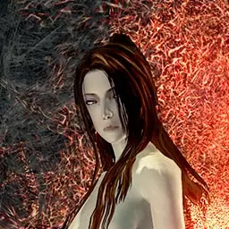
混沌魔女克拉格
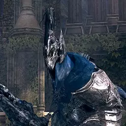
骑士亚尔特留斯